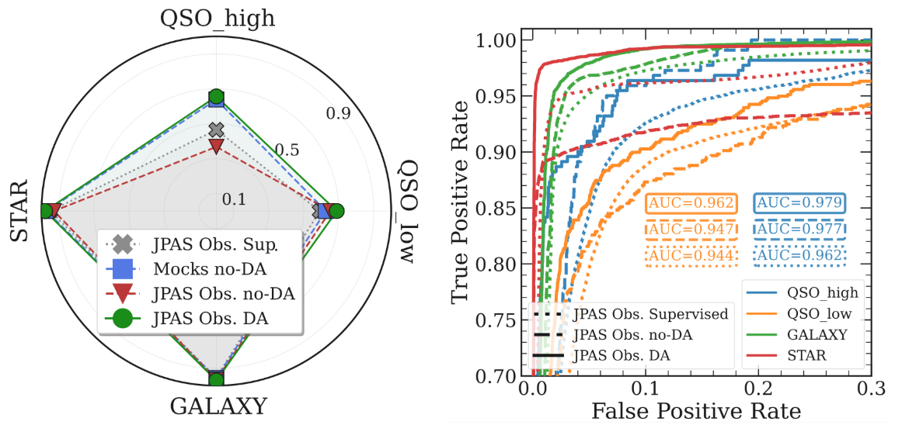
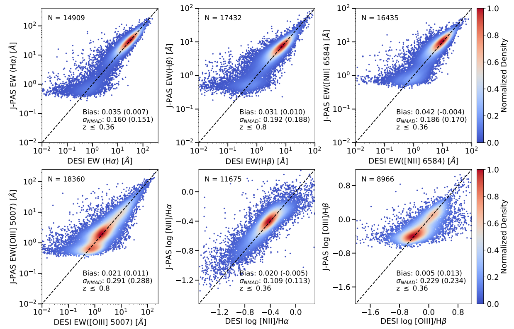
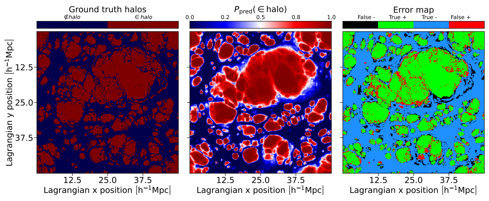
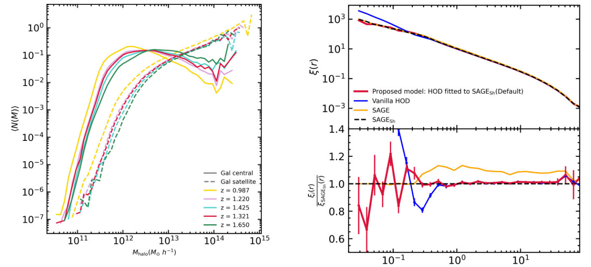
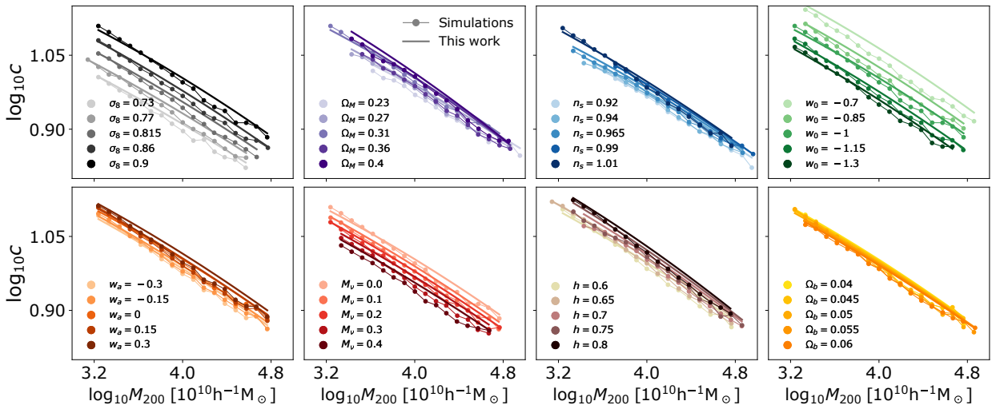
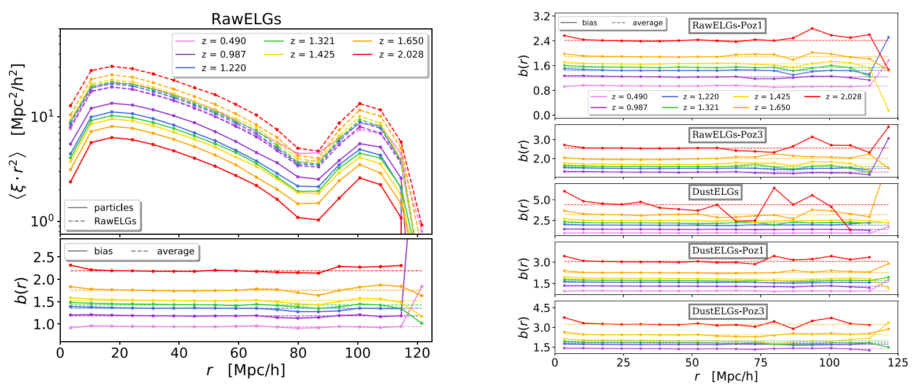

Research Projects & Publications
Selected Publications
2026 — J-PAS: Semi-Supervised Sim-to-Obs Transfer for Robust Star–Galaxy–Quasar Classification
Daniel López-Cano, L. Raul Abramo, L. Nakazono, I. Pérez-Ràfols, et al.2024 — Characterizing structure formation through instance segmentation
Daniel López-Cano, Jens Stüker, Marcos Pellejero Ibáñez, Raúl E. Angulo, Daniel Franco-Barranco2022 — The cosmology dependence of the concentration–mass–redshift relation
Daniel López-Cano, Raúl E. Angulo, Aaron D. Ludlow, M. Zennaro, S. Contreras, Jonás Chaves-Montero, G. Aricò
Full Publication List
J-PAS: Semi-Supervised Sim-to-Obs Transfer for Robust Star–Galaxy–Quasar Classification
Daniel López-Cano, L. Raul Abramo, L. Nakazono, I. Pérez-Ràfols, et al.
arXiv preprint, arXiv:2602.13902, doi:10.48550/arXiv.2602.13902
Semi-supervised domain adaptation for robust star–galaxy–quasar classification, designed to transfer effectively from simulated to observational data in the J-PAS setting.

OJALÁ: Optimizing J-PAS Astronomy for Large-scale Analysis. A foundation model for the SED of galaxies, QSOs and stars
G. Martínez-Solaeche, R. M. González Delgado, R. García-Benito, …, D. López-Cano, et al.
arXiv preprint, arXiv:2604.00661, doi:10.48550/arXiv.2604.00661
A collaboration paper developing a foundation-model approach for spectral energy distributions of galaxies, QSOs, and stars in the J-PAS context.

Characterizing structure formation through instance segmentation
Daniel López-Cano, Jens Stüker, Marcos Pellejero Ibáñez, Raúl E. Angulo, Daniel Franco-Barranco
Astronomy & Astrophysics, 685, A37
This work explores structure formation in cosmological simulations through instance segmentation, connecting modern computer-vision techniques with questions in numerical cosmology.

An improved halo occupation distribution prescription from UNITsim Hα emission-line galaxies: conformity and modified radial profile
Guillermo Reyes-Peraza, Santiago Avila, Violeta Gonzalez-Perez, Daniel López-Cano, Alexander Knebe, Sujatha Ramakrishnan, Gustavo Yepes
Monthly Notices of the Royal Astronomical Society, 529, 3877–3893
A study of improved halo-occupation prescriptions for Hα emission-line galaxies, with attention to conformity and modified radial profiles.

The cosmology dependence of the concentration–mass–redshift relation
Daniel López-Cano, Raúl E. Angulo, Aaron D. Ludlow, M. Zennaro, S. Contreras, Jonás Chaves-Montero, G. Aricò
Monthly Notices of the Royal Astronomical Society, 517, 2000–2011
A study of how halo concentrations vary across cosmologies, masses, and redshifts, contributing to the theoretical characterization of halo structure.

UNITSIM-Galaxies: data release and clustering of emission-line galaxies
Alexander Knebe, Daniel López-Cano, Santiago Avila, Ginevra Favole, Adam R. H. Stevens, Violeta Gonzalez-Perez, Guillermo Reyes-Peraza, Gustavo Yepes, Chia-Hsun Chuang, Francisco-Shu Kitaura
Monthly Notices of the Royal Astronomical Society, 510, 5392–5407
A data-release and clustering analysis paper for emission-line galaxies in the UNITsim-Galaxies framework.
